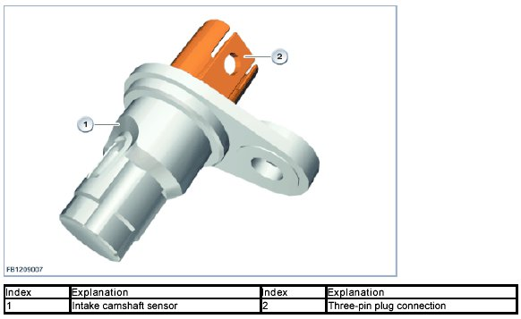
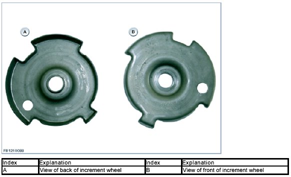
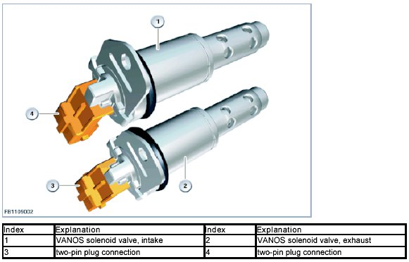
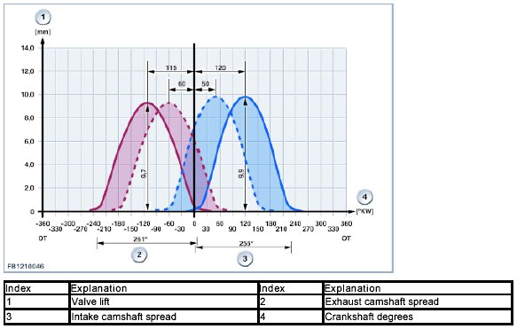
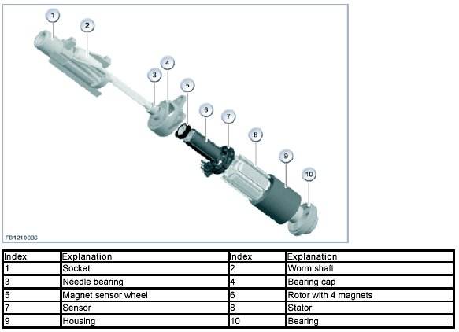
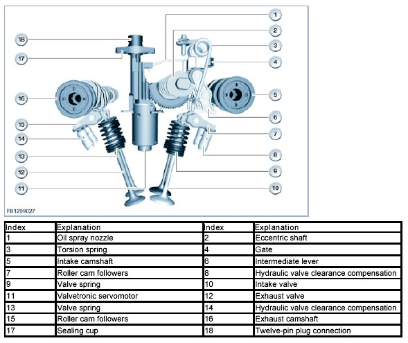
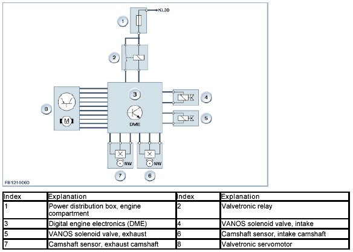
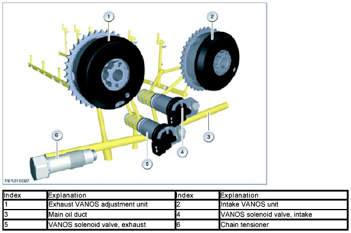
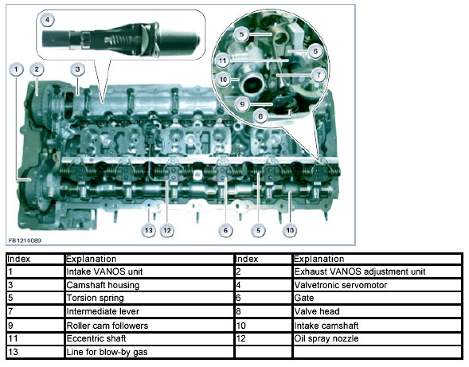
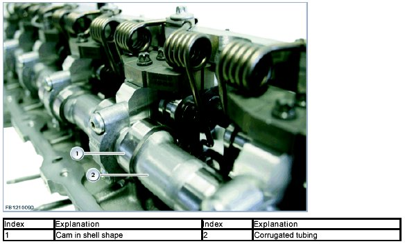

Valve Gear
Valve Gear
Valve gear
The valve gear consists of the fully variable valve lift timing (Valvetronic) and the variable camshaft timing control (double VANOS), which enables a free choice of closing time for the intake valve. Valve lift timing only takes place on the intake side; camshaft control takes place on the intake and exhaust side.
Throttle-free load control is only possible if the following variables can be controlled:
- Valve lift of the intake valve
- Camshaft adjustment of the intake and exhaust camshafts.
Result: The opening period of the intake valve is variable.
Brief component description
The following components are described for the valve gear:
- Camshafts
- Intake and exhaust valves
- Intake camshaft sensor and exhaust camshaft sensor
- VANOS solenoid valve intake and VANOS solenoid valve exhaust
- Valvetronic servomotor.
Camshafts
Only lightweight camshafts are used. The exhaust camshaft has been fitted with bearing races and encapsulated in a camshaft housing. The camshaft housing reduces oil foaming during operation.
Intake and exhaust valves
The valve gear is equipped with variable camshaft timing control (double VANOS) for the intake and exhaust camshaft. The VANOS enables a temporal shift in the opening of the intake and discharge valves.
Intake camshaft sensor and exhaust camshaft sensor
The two camshaft sensor pick up the interval stage of the camshafts. To this end, an increment wheel (camshaft sensor wheel) is fixed to the camshaft. The camshaft sensor works according to the Hall effect. Voltage is supplied to the by the Digital Engine Electronics (DME) with 5 Volts. The sensor delivers a digital signal via the signal line to the Digital Engine Electronics (DME).
The intake camshaft sensor is attached to the cylinder head cover. In the event of failure of the crankshaft sensor, the Digital Engine Electronics (DME) uses the signal to calculate the engine speed. The crankshaft sensor and intake camshaft sensor are necessary for the fully sequential fuel injection (fuel injection takes place individually for each cylinder at the specific ignition point).
The intake camshaft sensor enables the Digital Engine Electronics (DME) to detect whether the 1st cylinder is in the compression or exhaust stroke. In addition, this sensor delivers the feedback signal for camshaft position which controls the variable camshaft timing control (VANOS).
The intake camshaft sensor is designed as an inductive hall effect sensor. The camshaft sensor wheel has 6 different flank spacings. These flank spacings are picked up by the Hall effect sensor.
The Digital Engine Electronics (DME) uses this to calculate:
- The speed of the camshaft
- The adjustment speed of the camshaft
- The exact position of the camshaft.

For the engine start, the Digital Engine Electronics (DME) checks the following conditions:
- Error-free signal from the crankshaft sensor
- Signals must be detected in a specific chronological sequence.
This process is referred to as synchronization and is only performed when the engine is started. Only the synchronization enables the Digital Engine Electronics (DME) to activate the fuel injection correctly. The engine will not start without synchronization.
When voltage is applied, it is detected whether the sensor is above a tooth or above a gap.
The Digital Engine Electronics (DME) read in the sensor signal and then compare that signal against a template in its memory unit. This detects the exact position of the camshaft.
VANOS solenoid valve intake and VANOS solenoid valve exhaust
The variable camshaft timing control improves the torque in the lower and middle engine speed range. At the same time, the most favorable valve operation times for idle speed and maximum power output are adjusted. A greater valve overlap results in lower amounts of residual gas at idle speed. The exhaust-gas recirculation in the partial load range reduces the volume of nitrogen oxide.
The following is also achieved:
- faster heating of the catalytic converters
- lower pollutant emissions after a cold start
- reduction in the fuel consumption.


A VANOS solenoid valve activates the VANOS unit. The required positions of the intake and exhaust camshafts are calculated from the engine speed and the load signal (depending on the intake air temperature and coolant temperature). The Digital Engine Electronics (DME) activates the VANOS unit via the VANOS solenoid valve.
The VANOS inlet and exhaust solenoid valves are positioned axially on the front of the cylinder head. The VANOS solenoid valves (with integrated non-return valve) distribute the oil pressure to the two VANOS units.
Idle speed:
At idle speed, the camshafts are adjusted in such a way that there is a slight valve overlap to optimize consumption and operational smoothness. The smallest valve overlap is achieved with great to the greatest possible intake spread and the greatest possible exhaust spread. The VANOS solenoid valves are de-energized here. This camshaft position is also assumed on stopping the engine. In this state, the exhaust camshaft adjusters lock so that with a subsequent engine start there is a stable camshaft adjustment. This stable camshaft adjustment is also achieved when the oil pump has not yet built up adequate oil pressure to adjust the camshaft. With the first adjustment request, the oil flowing in unlocks the exhaust camshaft adjusters again.
Power output:
To achieve high torque at low engine speeds, the exhaust valves are opened late. This enables the expansion of combustion to move the piston for longer. At high engine speeds, the greater valve overlap (exhaust valve opening is advanced and exhaust valve opening is late) achieves height power output.
To achieve high torque, a high volumetric efficiency must be achieved. Depending on the intake pipe vacuum (charging pressure) and exhaust back pressure, the intake or exhaust valves must or opened or closed earlier or later. An engine with VANOS lies within a broad engine speed range with optimized cylinder charge. An engine with VANOS requires less charging pressure than an engine with a rigid camshaft position for the same filling (corresponds to torque).
Reason: Both ejection of the fresh gases back into the intake pipe and a flow of residual gas into the cylinder can be avoided.
Increasing torque with turbocharging
On the turbocharged engine, 'over-scavenging' - and thus significantly more torque - can be achieved at low engine speeds in the charged range with a scavenging divide by means of a large valve overlap.
The effect: More air than necessary for combustion flows through the engine. This means the twin-scroll exhaust turbocharger is not in the pumping range.
Second effect: There is virtually no residual gas present in the cylinder.
Internal exhaust-gas recirculation with partial load
In contrast to the torque-optimized and power-optimized position of the intake and exhaust camshafts, high exhaust-gas recirculation can also be forced with adjustment of the intake and exhaust camshafts. Decisive for the amount of internal exhaust-gas recirculation is: The size of the valve overlap as well as the pressure difference between the exhaust manifold and intake pipe.
Internal exhaust-gas recirculation has the following characteristics:
- Fast response times compared to external exhaust-gas recirculation (with internal exhaust-gas recirculation, there is no residual gas in the intake plenum)
- Fast exhaust-gas heat recirculation into the cylinder (with a cold engine, the additional heat improves the mixture preparation and leads to lower emission of hydrocarbons)
- Reduction in the temperatures of the combustion and thus a reduction in the nitrogen oxide emission.
The following graphic relates to engine N55:

Valvetronic servomotor
The third generation Valvetronic servomotor also contains the sensor for identifying the position of the eccentric shaft. Another special feature is that the Valvetronic servomotor is surrounded by engine oil. An oil spray nozzle ensures that the screw drive for the eccentric shaft is lubricated.
A brush-less direct current motor with integrated position sensor is used as the Valvetronic servomotor. This direct current motor is maintenance-free thanks to the contact-free power transformation and is very powerful (improved efficiency). Thanks to the use of integrated electronic modules, the Valvetronic servomotor can be controlled very precisely.

The activation of the Valvetronic servomotor is limited to a maximum of 40 amperes. For a period greater than 200 milliseconds, a maximum of 20 amperes is available. The Valvetronic servomotor is activated via pulse-width modulation. The duty cycle is between 5 and 98 %.
The following graphic shows the Valvetronic components in engine N55.

The Valvetronic servomotor is supplied by the Digital Engine Electronics (DME) with 5 Volts. 5 Hall effect sensors provide the Digital Engine Electronics (DME) with signals. Of the 5 hall effect sensors, 3 are used for approximate identification and 2 for detailed classification. This means that the angle of rotation of the Valvetronic servomotor can be determined at less than 7.5°. Thanks to the ratio of the worm shaft, this permits a very precise and rapid stroke adjustment of the valve lift.
System overview
The following graphic shows a system overview of the valve gear in engine N55:

System functions
The following system functions are described:
- Variable camshaft timing control, VANOS
- Valve stroke control, Valvetronic.
Variable camshaft timing control, VANOS
The variable camshaft timing control has been optimized. This optimization now enables even faster adjustment speeds of the VANOS valve actuators. The optimization has also further reduced susceptibility to dirt contamination.
The camshaft sensor wheel is now 1 component and no longer made of 2 parts. This measure increases the accuracy of production and reduces costs.
The non-return valve with strainer has been integrated in the VANOS solenoid valves. This measure has also enabled a reduction in the number of oil ducts in the cylinder head. Furthermore, the non-return valves have been integrated in the VANOS solenoid valves. Strainers on the VANOS solenoid valve ensure fault-free function and reliably prevent the VANOS solenoid valves from be jammed by dirt particles.
The control of the intake and exhaust camshaft is variable within their maximum adjustment range. Once the correct camshaft position has been reached, the VANOS solenoid valves ensure that the oil volume in the positioning cylinders in both chambers remains constant. This keeps the camshafts in this position. To perform the adjustment, the variable camshaft timing control requires a feedback signal on the current position of the camshaft. Camshaft sensors on the intake and exhaust side record the position of the camshafts. On engine start, the intake camshaft is in the end position ("late"). When the engine is started, the exhaust camshaft is pretensioned by a spring and held in the "advanced" position.

Valve stroke control, Valvetronic
An electrically-adjustable eccentric shaft changes the action of the camshaft on the roller cam follower via an intermediate lever. The result of this is variable valve lift.
One special feature is that the eccentric shaft sensor is no longer located on the eccentric shaft; it has been integrated in the servomotor.
Valvetronic III is used. The differences between Valvetronic III and Valvetronic II lie in the arrangement of the Valvetronic servomotor and of the sensor. With Valvetronic III, the level of turbulence at the end of compression is increased to optimize mixture preparation with advance and masking, as was already the case with Valvetronic II.
The charge movement improves combustion in the partial load range and heating mode of the catalyst.
Advance
The advance leads to a difference in the stroke of the two intake valves of up to 1.8 mm in the lower partial load range. This swirls the fresh gas that is drawn in, making it rotate.
Masking
Masking is the shape at the valve seat. The effect of this shape is that the incoming fresh air is aligned in such a way that the desired charge movement results. The of these measures is that, for example, the delay on combustion is reduced by approx. 10° crank angle. Combustion is completed more quickly and a greater valve overlap can be used. This enables a significant reduction in NOx emissions.
The response characteristics can be improved by combining Valvetronic III, direct fuel injection and turbocharging. As in the case of the naturally aspirated engine with Valvetronic, the response characteristics up to naturally aspirated full load are shortened, as the filling procedure of the air intake system for intake air is not required. The subsequent build-up of torque on start-up of the exhaust turbocharger at low engine speeds can be accelerated by setting a partial stroke. This promotes the purging of residual gas, which leads to faster build-up of torque.
A new brushless direct current motor is used. The Valvetronic servomotor has the following special features:
- Open concept (supplied with oil)
- Angle of the eccentric shaft is calculated from revolutions of the engine
- Power consumption reduced by approx. 50%
- Greater dynamics of the adjuster (for example, cylinder-specific adjustment or idle speed control)
- Reduction in the weight (approx. 600 grams).
The third generation Valvetronic servomotor also contains the sensor for identifying the position of the eccentric shaft. Another special feature is that the Valvetronic servomotor is supplied with and surrounded by engine oil. An oil spray nozzle ensures that the screw drive for the eccentric shaft is lubricated.
Valvetronic was developed to reduce fuel consumption. Activation of the Valvetronic is now integrated in the Digital Engine Electronics (DME). The air supplied to the engine when Valvetronic is active is adjusted by the variable valve lift on the intake valve and not the electrical throttle-valve actuator.
The following graphic shows the Valvetronic components in engine N55

The electrical throttle-valve actuator is activated for the following functions:
- Engine start (warm-up)
- Idle speed control
- Full load operation
- Emergency operation.
In all other operating conditions, the throttle valve only remains open far enough to induce a slight vacuum. This vacuum is required to ventilate the tank, for example. The Digital Engine Electronics (DME) calculate the associated position of Valvetronic using the position of the accelerator pedal and other variables. The Digital Engine Electronics (DME) activate the Valvetronic servomotor at the cylinder head. The Valvetronic servomotor uses a worm gear to drive the eccentric shaft in the oil chamber of the cylinder head. The two signals of the eccentric shaft sensor are permanently monitored by the Digital Engine Electronics (DME). Checks are made as to whether the signals are plausible in their own right and also in relation to one another. The signals may not differ. Where a short circuit or fault develops, the signals lie outside the measuring range. The Digital Engine Electronics (DME) control unit continuously checks whether the actual position of the eccentric shaft corresponds with its desired position. This makes it possible to determine when a valve is sticking. In the event of malfunctions, the valves are opened as wide as possible. The air supply is then controlled by the throttle valve. If the actual position of the eccentric shaft cannot be detected, the valves are opened to the maximum extent without regulation (controlled emergency operation). In order to achieve the correct valve opening, an adaptation must be made to balance all tolerances in the valve gear. During this adaptation process, the mechanical limit positions on the eccentric shaft are adjusted.
The positions registered are subsequently saved. These positions are used as the basis for calculating the actual valve lift in every situation. The adaptation process is automatic.
Each time the engine is restarted, the position of the eccentric shaft is compared with the values registered. If following a repair, for example, a different position of the eccentric shaft is detected, the adaptation process is carried out. In addition, the adaptation can be initiated via the diagnostic system.
The following graphic shows the components in engine N55

We can assume no liability for printing errors or inaccuracies in this document and reserve the right to introduce technical modifications at any time.